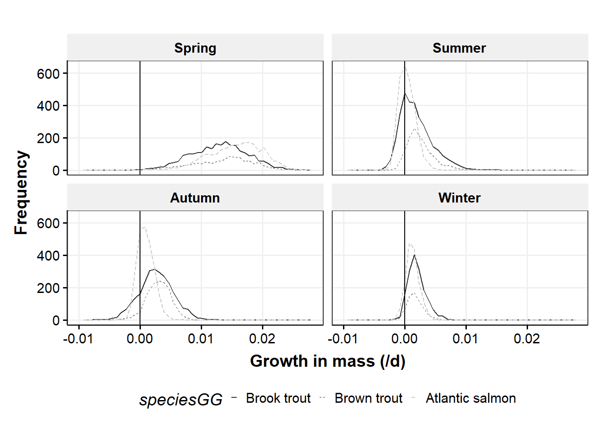
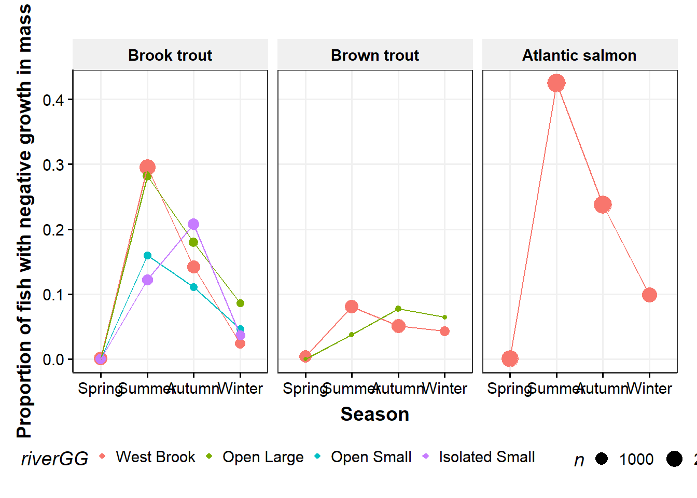
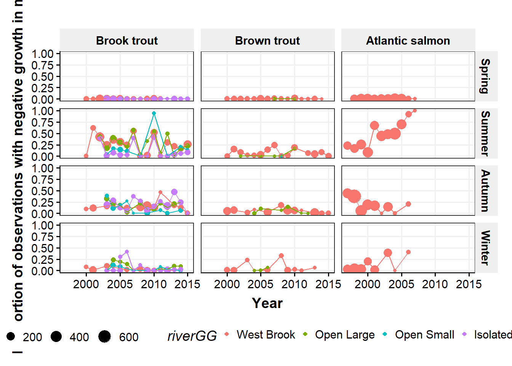
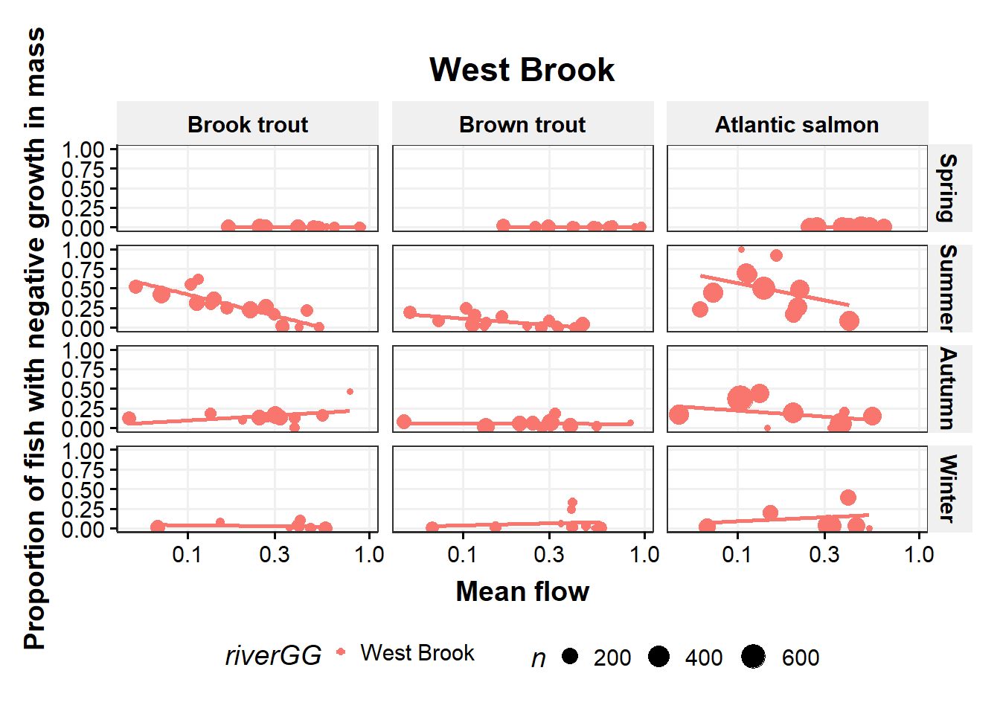

Distribution of growth, negative growth
- Seasonal differences
- Species differences in size/growth/CF - Patterns of negative growth
Causes of neg growth
- Extrinsic
- river, season, flow, temp
- intrinsic
- Sex (fall), life history, section, size, age, previous growth (CF?), movement (section/river)
consequences of neg growth - survival
- future growth (length and mass)
- movement (section/river)
- reprod success?
- local density (con and hetero)
Probs with growth in mass
spawning loss mass in the fall, esp in OB
Interaction between flow:temp, diff btw WB (groundwater dominated at low flow so cold) and tribs (combo of surface and gw?)
Compare growth with t/f cycle diagrams for each river
compare condition factor among species - looks like bkt growing faster in weight
flow/temp circles with gr on top
16.1 Get data
16.1.1 Get electrofishing data
Code
library(targets)cd <-tar_read(cdWB_electro_target) # raw datacd1 <-tar_read(cd1_target) # from modelGrowthInMass_targetpropNegSRS <-tar_read(propNegSRS_target)propNegSRsN <-tar_read(propNegSRsN_target)indCountsBySpp <-tar_read(indCountsBySpp_target) indCounts <-tar_read(indCounts_target) propNegLabels <-tar_read(propNegLabels_target)negGr_beforeLast <-tar_read(negGr_beforeLast_target)meanNegSRsN <-tar_read(meanNegSRsN_target)meanNegSRsNWide <-tar_read(meanNegSRsNWide_target)# df for pairs plotscd1Wide_grWeight <-tar_read(cd1Wide_grWeight_target)cd1Wide_observedWeight <-tar_read(cd1Wide_observedWeight_target)dGAM <-tar_read(dGAM_target) # from modelGrowthInMass_target
16.1.2 Get environmental data
Code
library(targets)dummy=0# change to force cache update??envIn <-tar_read(envIn_target)envIn_propNeg <-tar_read(envIn_propNeg_target)
16.2 Examine raw data
16.2.1 Limit data to consecutive sample captures (cd1)
Previous growth models with length used all possible observations for a fish and interpolated missing observations. Here, we are just looking at consecutive captures to estimate growth over just that interval.
Code
# table(as.numeric(cd$sampleNumber), as.numeric(cd$lagSampleNumber), cd$season, cd$year) |> # data.frame() |> # filter(Freq > 0) |> # arrange(Var1, Var2) |> # rename(firstCapt = Var1, secondCapt = Var2, season = Var3, year = Var4) |> # filter(year == 2010)##### in targets# cd1 <- cd |> # filter(sampleNumberDiff == 1,# tag %notin% c('1bf20ff490', '1bf20ebe4e')) |> # mutate(negGrowth = grWeight < 0,# month = month(date),# dummy = 1) # change to force cache update
16.2.2 Find outlier growth rates
16.2.2.1 Negative outlier growth
1bf20ebe4e and 1bf20ff490 have incorrect weights leading to very negative growth rates.
Exclude these tags in cd1_target. The rest of the quite negative growth fish seem plausible (remember we can’t account for stomach contents or egg loss).
Lots of very fast growth mostly in the spring. No clear way to exclude fish. 1c2c582218 is excluded in cd1_target because of very high growth in length.
ggplot(cd1, aes(grWeight, color = speciesGG)) +geom_freqpoly(bins =50) +labs(x ="Growth in mass (/d)", y ="Frequency") +scale_color_discrete() +geom_vline(xintercept =0) +theme_publication() +facet_wrap(~seasonGG)

Code
ggplot(cd1, aes(grLength, color = speciesGG)) +geom_freqpoly(bins =50) +labs(x ="Growth in Length (mm/d)", y ="Frequency") +scale_color_discrete() +geom_vline(xintercept =0) +theme_publication() +facet_wrap(~seasonGG)
plotTempGR <-function(d, s){ggplot(d |>filter(seasonGG == s), aes(meanTemperature, grWeight, color = speciesGG)) +geom_point(alpha =0.5) +geom_smooth(method ="lm", se =FALSE, color ='darkgrey') +geom_smooth(se =FALSE, color ='darkgrey') +geom_smooth(method ="lm", se =FALSE, formula = y~poly(x,2), color ='darkgrey') +labs(x ="Mean temperature (c)", y ="Growth in mass") +scale_color_discrete() +# ggtitle(s) +theme_publication() +facet_grid(speciesGG~riverGG)#, scales = 'free')}
16.4.2 Proportion of fish with negative growth by species/season
Code
ggplot(propNegSRS |>filter(n >50), aes(seasonGG, propNeg, color = riverGG, group = riverGG)) +geom_point(aes(size = n)) +geom_line() +labs(x ="Season", y ="Proportion of fish with negative growth in mass") +scale_color_discrete() +theme_publication() +facet_wrap(~speciesGG)

16.4.3 Proportion of fish with negative growth by species/river/year
Code
plotPropNegByRiver <-function(d, spp){ggplot(d |>filter(n >10, speciesGG == spp), aes(year, propNeg, color =factor(seasonGG))) +geom_point(aes(size = n)) +geom_line() +labs(x ="Year", y ="Proportion of fish with negative growth in mass") +scale_color_discrete() +theme_publication() +facet_wrap(~riverGG)}
16.4.4 Proportion of fish with negative growth by species/river/year
Break down season by year, compare across rivers
Code
ggplot(propNegSRsN |>filter(n >10), aes(year, propNeg, color = riverGG)) +geom_point(aes(size = n)) +geom_line() +labs(x ="Year", y ="Proportion of fish with negative growth in mass") +scale_color_discrete() +theme_publication() +facet_grid(seasonGG~speciesGG)

16.5 Environmental effects on proportion of fish with negative growth
16.5.1 Proportion of fish with negative growth by flow
Code
ggplot(propNegSRsN |>filter(n >10, riverGG =="West Brook"), aes(mF, propNeg, color = riverGG)) +geom_point(aes(size = n)) +geom_smooth(method ="lm", se =FALSE) +scale_y_continuous("Proportion of fish with negative growth in mass") +scale_x_log10("Mean flow") +scale_color_discrete() +ggtitle("West Brook") +theme_publication() +facet_grid(seasonGG~speciesGG)

Code
ggplot(propNegSRsN |>filter(n >10, riverGG !="West Brook"), aes(mF, propNeg, color = riverGG)) +geom_point(aes(size = n)) +geom_smooth(method ="lm", se =FALSE) +scale_y_continuous("Proportion of fish with negative growth in mass") +scale_x_log10("Mean flow") +scale_color_discrete() +ggtitle("Tributaries") +theme_publication() +facet_grid(seasonGG~speciesGG)
16.5.2 Proportion of fish with negative growth by temperature
Code
plotNegGrowth_temp <-function(d, s){ggplot(d |>filter(n >10, seasonGG == s), aes(mT, propNeg, color = riverGG)) +geom_point(aes(size = n)) +geom_smooth(method ="lm", se =FALSE) +scale_y_continuous("Proportion of fish with negative growth in mass") +scale_x_continuous("Mean temperature (C)") +scale_color_discrete() +ggtitle(s) +theme_publication() +facet_grid(riverGG~speciesGG)}
16.5.3 Proportion of fish with negative growth by 3 species fish counts
Code
ggplot(propNegSRsN |>filter(n >10, riverGG =="West Brook"), aes(nInd, propNeg, color = riverGG)) +geom_point(aes(size = n)) +geom_smooth(method ="lm", se =FALSE) +scale_y_continuous("Proportion of fish with negative growth in mass") +scale_x_log10("3 species count") +scale_color_discrete() +ggtitle("West Brook") +theme_publication() +facet_grid(seasonGG~speciesGG)
Code
ggplot(propNegSRsN |>filter(n >10, riverGG !="West Brook"), aes(nInd, propNeg, color = riverGG)) +geom_point(aes(size = n)) +geom_smooth(method ="lm", se =FALSE) +scale_y_continuous("Proportion of fish with negative growth in mass") +scale_x_log10("3 species count") +scale_color_discrete() +ggtitle("Tributaries") +theme_publication() +facet_grid(seasonGG~speciesGG)
16.5.4 Proportion of fish with negative growth by conspecific fish counts
Code
ggplot(propNegSRsN |>filter(n >10, riverGG =="West Brook"), aes(nIndBySpp, propNeg, color = riverGG)) +geom_point(aes(size = n)) +geom_smooth(method ="lm", se =FALSE) +scale_y_continuous("Proportion of fish with negative growth in mass") +scale_x_log10("conspecific count") +scale_color_discrete() +ggtitle("West Brook") +theme_publication() +facet_grid(seasonGG~speciesGG)
Code
ggplot(propNegSRsN |>filter(n >10, riverGG !="West Brook"), aes(nIndBySpp, propNeg, color = riverGG)) +geom_point(aes(size = n)) +geom_smooth(method ="lm", se =FALSE) +scale_y_continuous("Proportion of fish with negative growth in mass") +scale_x_log10("conspecific count") +scale_color_discrete() +ggtitle("Tributaries") +theme_publication() +facet_grid(seasonGG~speciesGG)
16.6 F/T cycle graphs
16.6.1 Mean flow and temperature
Code
plot_mT_mF <-function(d, s, plotText){ggplot(d |>filter(n >25, speciesGG == s), aes(mT, mF_log10, color =factor(seasonGG))) +geom_point(aes(size = propNeg)) + {if(plotText) geom_text(aes(label = year), vjust =0, nudge_y =-0.075, check_overlap =FALSE, size =3)} +labs(x ="Mean temperature (C)", y ="log10 of mean Flow") +scale_color_discrete() +theme_publication() +facet_wrap(~riverGG, scales ="free")}
16.6.4 Yearly temperature/flow cycles of daily data
Code
plotMerged <-function(d, r, minYear =2000, maxYear =2017){ggplot(d |>filter(riverGG == r, year %in%c(minYear:maxYear)), aes(temperature, log10(flowByRiver), color = seasonGG, group = seasonGG)) +geom_point() +geom_smooth(se =FALSE) +#geom_line() +labs(x ="Temperature (C)", y ="log10 of Flow") +scale_color_discrete() +ggtitle(r) +theme_publication() +facet_wrap(~year, scales ='free')}# this plots f/t for all three species - good for filling in gaps
Relationship between individual growth and length of subsequent observations (how many more observations before the last observation) for individual fish.
Using xgBoost to explore patterns in:
- Binary, lose mass:gain mass
- Regression, growth in mass
16.8.1 Binary model with negative growth, yes:no
Not yet in targets….
Code
# http://uc-r.github.io/gbm_regressiondML <- cd1 |>filter(speciesGG =="Brook trout", !is.na(grWeight)) |>mutate(age = year - cohort) |> dplyr::select(riverGG, seasonGG, observedWeight, cohort, age, meanTemperature, meanFlowByRiver, negGrowth) # variable namesfeatures <-setdiff(names(dML), "negGrowth")# Create the treatment plan from the training datatreatplan <- vtreat::designTreatmentsZ(dML, features, verbose =FALSE)# Get the "clean" variable names from the scoreFramenew_vars <- treatplan %>% magrittr::use_series(scoreFrame) %>% dplyr::filter(code %in%c("clean", "lev")) %>% magrittr::use_series(varName) # Prepare the training datafeatures_train <- vtreat::prepare(treatplan, dML, varRestriction = new_vars) %>%as.matrix()response_train <- dML$negGrowth# Prepare the test datafeatures_test <- vtreat::prepare(treatplan, dML, varRestriction = new_vars) %>%as.matrix()response_test <- dML$negGrowth# dimensions of one-hot encoded datadim(features_train)
[1] 10089 13
Code
dim(features_test)
[1] 10089 13
16.8.1.1 Run first model
Code
# reproducibilityset.seed(123)xgb.fit1 <-xgb.cv(data = features_train,label = response_train,nrounds =10000,nfold =5,objective ="binary:logistic", #"reg:linear", # for regression modelsverbose =0, # silent,early_stopping_rounds =15# stop if no improvement for 10 consecutive trees)# get number of trees that minimize errorxgb.fit1$evaluation_log %>% dplyr::summarise(ntrees.train =which(train_logloss_mean ==min(train_logloss_mean))[1],logloss.train =min(train_logloss_mean),ntrees.test =which(test_logloss_mean ==min(test_logloss_mean))[1],logloss.test =min(test_logloss_mean), )
# plot error vs number treesggplot(xgb.fit1$evaluation_log) +geom_line(aes(iter, train_logloss_mean), color ="red") +geom_line(aes(iter, test_logloss_mean), color ="blue")
# plot error vs number treesggplot(xgb.fit2$evaluation_log) +geom_line(aes(iter, train_logloss_mean), color ="red") +geom_line(aes(iter, test_logloss_mean), color ="blue")
16.8.1.3 Hyperparameter search grid
Code
# create hyperparameter gridhyper_grid <-expand.grid(eta =c(.01, .05, .1, .3),max_depth =c(1, 3, 5, 7),min_child_weight =c(1, 3, 5, 7),subsample =c(.65, .8, 1), colsample_bytree =c(.8, .9, 1),optimal_trees =0, # a place to dump resultsmin_RMSE =0# a place to dump results)nrow(hyper_grid)
# parameter list - from the top model of the grid search aboveparams <-list(eta =0.01,max_depth =5,min_child_weight =1,subsample =0.8,colsample_bytree =0.8)# train final modelxgb.fit.final <-xgboost(params = params,data = features_train,label = response_train,nrounds =1082,objective ="binary:logistic",verbose =0,early_stopping_rounds =25# stop if no improvement for 10 consecutive trees)
# get a few observations to perform local interpretation onlocal_obs <- dML[1:3, ]# one-hot encode the local observations to be assessed.local_obs_onehot <- vtreat::prepare(treatplan, local_obs, varRestriction = new_vars)# apply LIMEexplainer <-lime(data.frame(features_train), xgb.fit.final, quantile_bins =FALSE)explanation <- lime::explain(local_obs_onehot, explainer, n_features =5, n_labels =2)plot_features(explanation)
16.8.2 Growth model, continuous growth
can we add season, river interactions? or do separate analyses?
Code
library(targets)dML_W <-tar_read(dML_W_target)treatplan_W <-tar_read(treatplan_W_target)features_train_W <-tar_read(features_train_W_target)new_vars_W <-tar_read(new_vars_W_target)# dimensions of one-hot encoded datafeatures_train_W <-tar_read(features_train_W_target)features_test_W <-tar_read(features_test_W_target)response_train_W <-tar_read(response_train_W_target)response_test_W <-tar_read(response_test_W_target)# run from targetshyper_grid_W <-tar_read(hyper_grid_W_target)topModel_W <-tar_read(topModel_W_target)finalModels_W <-tar_read(finalModels_W_target)modelToUse <-1
16.8.2.1 Run first model
Code
# reproducibilityset.seed(1234)xgb.fit1_W <-xgb.cv(data = features_train_W,label = response_train_W,nrounds =500,nfold =5,objective ="reg:squarederror", # for regression modelsverbose =0, # silent,early_stopping_rounds =10)# get number of trees that minimize errorxgb.fit1_W$evaluation_log %>% dplyr::summarise(ntrees.train =which(train_rmse_mean ==min(train_rmse_mean))[1],rmse.train =min(train_rmse_mean),ntrees.test =which(test_rmse_mean ==min(test_rmse_mean))[1],rmse.test =min(test_rmse_mean), )
# plot error vs number treesggplot(xgb.fit1_W$evaluation_log) +geom_line(aes(iter, train_rmse_mean), color ="red") +geom_line(aes(iter, test_rmse_mean), color ="blue")
# get a few observations to perform local interpretation onlocal_obs_W <- dML_W[1:3, ]# one-hot encode the local observations to be assessed.local_obs_onehot_W <- vtreat::prepare(treatplan_W, local_obs_W, varRestriction = new_vars_W)# apply LIMEexplainer_W <-lime(data.frame(features_train_W), finalModels_W$xgb[[modelToUse]], quantile_bins =FALSE)explanation_W <- lime::explain(local_obs_onehot_W, explainer_W, n_features =5, n_labels =2)plot_features(explanation_W)
16.10.2 Raw data with logistic fit for flow effect
Code
ggplot(cd1 |>filter(!is.na(negGrowth)), aes(meanFlowByRiverZ, negGrowth *1, color = river)) +geom_point(alpha =0.1) +geom_smooth(method ="glm", method.args =list(family ="binomial"),se =FALSE) +labs(y ="Probability of negative growth in mass", x ="Mean flow") +theme_publication() +facet_grid(season~species)
Code
ggplot(cd1 |>filter(!is.na(negGrowth)), aes(meanFlowByRiverZ, negGrowth *1, color = river)) +geom_point(alpha =0.1) +geom_smooth(method ="glm", method.args =list(family ="binomial"),se =FALSE) +labs(y ="Probability of negative growth in mass", x ="Mean flow") +theme_publication() +facet_grid(season~species+river)
16.10.3 Raw data with logistic fit for temperature effect
Code
ggplot(cd1 |>filter(!is.na(negGrowth), meanTempZ >-4), aes(meanTempZ, negGrowth *1, color = river)) +geom_point(alpha =0.1) +geom_smooth(method ="glm", method.args =list(family ="binomial"),se =FALSE) +labs(y ="Probability of negative growth in mass", x ="Mean temperature") +theme_publication() +facet_grid(season~species)
16.11 Logistic model for flow and temperature, one species at a time
Species occupy different rivers, so an all-species model will have unequal river representation across species and don’t need to predict where species are not.
Need to think through whether these models make sense…
predictSpp <-function(dIn, modIn, speciesIn){ d <- dIn |>filter(species == speciesIn) byAIC = modIn |>unnest(glanced) |>arrange(AIC) |> dplyr::select(model, AIC, df.residual, fit, tidied) predDSpp <-expand.grid(meanFlowByRiverZ =seq(-1.5,1.5,0.25), meanTempZ =seq(-1.5,1.5,0.25), river =unique(d$river), season =unique(d$season),observedWeight =seq(min(d$observedWeight, na.rm =TRUE), max(d$observedWeight, na.rm =TRUE), 40) ) pred <-add_column(predDSpp, pred =predict.glm(byAIC[1,]$fit[[1]], predDSpp, type ="response")) |>mutate(groupT =paste(river, season, meanTempZ, sep ="_"),groupF =paste(river, season, meanFlowByRiverZ, sep ="_"))return(list(pred = pred,byAIC = byAIC ) )}
16.11.2 Brook trout
Code
speciesIn <-"bkt"modBKT <-runSppModels(cd1, speciesIn)predBKT <-predictSpp(cd1, modBKT, speciesIn)ggplot(predBKT$pred |>filter(meanTempZ %in%c(-1.5,0,1.5), meanFlowByRiverZ %in%c(-1.5,0,1.5)), aes(observedWeight, pred, group = groupF)) +geom_line(aes(color =factor(meanFlowByRiverZ))) +labs(y ="Probability of negative growth in mass", x ="Body mass (mg)") +theme_publication() +facet_grid(season~river+meanTempZ)
16.11.3 Brown trout
Code
speciesIn <-"bnt"modBNT <-runSppModels(cd1, speciesIn)predBNT <-predictSpp(cd1, modBNT, speciesIn)ggplot(predBNT$pred |>filter(meanTempZ %in%c(-1.5,0,1.5), meanFlowByRiverZ %in%c(-1.5,0,1.5)), aes(observedWeight, pred, group = groupF)) +geom_line(aes(color =factor(meanFlowByRiverZ))) +labs(y ="Probability of negative growth in mass", x ="Body mass (mg)") +theme_publication() +facet_grid(season~river+meanTempZ)
16.11.4 Atlantic salmon
Code
speciesIn <-"ats"modATS <-runSppModels(cd1, speciesIn)predATS <-predictSpp(cd1, modATS, speciesIn)ggplot(predATS$pred |>filter(meanTempZ %in%c(-1.5,0,1.5), meanFlowByRiverZ %in%c(-1.5,0,1.5)), aes(observedWeight, pred, group = groupF)) +geom_line(aes(color =factor(meanFlowByRiverZ))) +labs(y ="Probability of negative growth in mass", x ="Body mass (mg)") +theme_publication() +facet_grid(season~river+meanTempZ)
16.12 Two growth models
16.12.1 Size-adjusted growth model
16.12.1.1 Get l-w relationships for size-adjusted growth model
Here, we will explore size-independent growth in mass, see Sigourney, D. B., B H Letcher, M. Obedzinski, and R. A. Cunjak. “Size-Independent Growth in Fishes: Patterns, Models and Metrics.” Journal of Fish Biology 72, no. 10 (2008): 2435–55. https://doi.org/10.1111/j.1095-8649.2008.01830.x. Size-independent growth (grWeightS) is calculated in getDataElectro_targets.R file using addSizeIndGrowthWeight(). grWeightS uses the slope of log(observedWeight) ~ log(grWeight) for each river and season and species to adjust growth.
A simple linear models shows we need to get separate slopes for each river and season and species.
Code
ggplot(cd1 |>filter(grWeight >0), aes(log(observedWeight), log(grWeight), color = riverGG)) +geom_point(alpha =0.05) +geom_smooth(method ="lm", se =FALSE) +labs(y ="Log of mass (mg)", x ="Log of growth in mass") +scale_color_discrete() +theme_publication() +facet_grid(seasonGG~speciesGG)
Code
mod0 <-lm(log(grWeight) ~log(observedWeight), data = cd1 |>filter(grWeight >0))mod1 <-lm(log(grWeight) ~log(observedWeight) * river, data = cd1 |>filter(grWeight >0))mod2 <-lm(log(grWeight) ~log(observedWeight) * river *factor(season), data = cd1 |>filter(grWeight >0))mod3 <-lm(log(grWeight) ~log(observedWeight) *factor(season), data = cd1 |>filter(grWeight >0))mod4 <-lm(log(grWeight) ~log(observedWeight) * river *factor(season) * species, data = cd1 |>filter(grWeight >0))AIC(mod0,mod1,mod2,mod3,mod4) |>arrange(AIC)